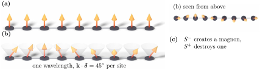

Advanced Quantum Materials 2027 · All lectures · Lecture notes
Session 6. Classical Magnetism and Magnons
6.13 Magnons as fluctuations of the order parameter
Until now we have only asked about ground states. Let us now ask about excitations. We take the Heisenberg model (6.5) with \(J<0\), which is ferromagnetic, and we promote the spins to real quantum operators that satisfy the angular-momentum algebra \([S_i^a,S_j^b] = i\hbar\,\delta_{ij}\epsilon^{abc}S_i^c\). From here on we set \(\hbar=1\), which is the standard choice for this kind of calculation, and we ask for the low-lying excited states. In contrast with the interacting electron problem, the exact ground state of the ferromagnetic Heisenberg model is known immediately. It is the fully polarized state with all spins aligned, since for \(J<0\) no other configuration can lower \(\langle \mathbf S_i\cdot\mathbf S_j\rangle\) further. A magnon is a small fluctuation of the magnetization that propagates on top of this fully polarized state. Qualitatively, it is a single spin tilted slightly out of alignment, delocalized coherently over the whole lattice as a wave. The question is how to obtain these excitations systematically from a many-body spin Hamiltonian. The answer is a change of variables that turns the spin problem into a bosonic tight-binding problem.
6.14 The Holstein-Primakoff transformation
There is an exact mapping between spin operators and bosonic creation and annihilation operators \(a_i^\dagger, a_i\) with \([a_i,a_j^\dagger]=\delta_{ij}\), which is called the Holstein-Primakoff transformation. For a spin of magnitude \(S\) on site \(i\), it reads
\[S_i^z = S - a_i^\dagger a_i, \qquad S_i^+ = \sqrt{2S-a_i^\dagger a_i}\;a_i, \qquad S_i^- = a_i^\dagger\sqrt{2S-a_i^\dagger a_i}. \tag{6.6}\]
This is an exact rewriting. If we insert (6.6) and use the bosonic commutation relations, we obtain exactly the full \(SU(2)\) spin algebra \([S_i^z,S_i^\pm]=\pm S_i^\pm\), \([S_i^+,S_i^-]=2S_i^z\), without any approximation so far. The physical picture is direct. The operator \(a_i^\dagger a_i\) counts how many units of spin have been removed from the fully polarized value \(S\) on site \(i\), which means that it counts the magnons on that site, and \(S_i^z=S-a_i^\dagger a_i\) states exactly this. The square-root operators are what make (6.6) exact even far from full polarization. They are also the reason why the Hamiltonian, written in this form, looks more complicated and not simpler.
The simplification comes from linearizing. When the expectation value of \(a_i^\dagger a_i\) stays much smaller than \(S\), which means when we stay close to the fully polarized ground state, we can expand the square roots and keep only the leading term. This is the regime that we want, since we are looking for low-lying excitations above this ground state, and the result is
\[S_i^+ \approx \sqrt{2S}\, a_i, \qquad S_i^- \approx \sqrt{2S}\, a_i^\dagger, \qquad S_i^z = S - a_i^\dagger a_i. \tag{6.7}\]
This linearized form is the one that is used in practice to compute magnon spectra. The counting that follows from it is the easiest way to remember the whole transformation, so we write it out. The operator \(S^+\) raises \(S^z\), meaning that it increases the local magnetization back toward saturation, and it destroys a magnon. The operator \(S^-\) lowers the magnetization, and it creates a magnon. The total magnetization of the system is the fully saturated value minus the total number of magnons, \(\sum_i \langle S_i^z\rangle = NS - \sum_i\langle a_i^\dagger a_i\rangle\). Each magnon has exactly one unit of spin, so magnons are \(S=1\) excitations, in agreement with what we said about them in Section 6.1. They exist only because the ground state on which they live has already broken spin-rotation symmetry spontaneously. Figure 6.5 shows the three parts, which are the fully polarized ground state, the delocalized precession wave that carries a single magnon, and this rule for raising and lowering.

We create one magnon on top of the saturated ferromagnet. Which operator does it, and how does the total \(S^z\) change?
Show the answers
- A. ✓ True
This is true. The boson number counts the spin removed from saturation, so \(\sum_i\langle S_i^z\rangle=NS-\sum_i\langle a_i^\dagger a_i\rangle\). The lowering operator \(S^-\) creates a boson and reduces \(S^z\) by one.
- B. ✗ False
This is false. On the saturated state with all spins up, \(S^+_i|\uparrow\rangle=0\). Nothing is created, because \(S^z=S\) is already the maximum.
- C. ✗ False
This is false. Take two spin-\(1/2\) sites. The state \(|\uparrow\uparrow\rangle\) has \(S^z=1\), and \(S_1^-\) gives \(|\downarrow\uparrow\rangle\) with \(S^z=0\), so the total changes by one.
We insert (6.7) into the ferromagnetic Heisenberg Hamiltonian, \(H = J\sum_{\langle ij\rangle} \mathbf S_i\cdot\mathbf S_j = J\sum_{\langle ij\rangle}\big[S_i^zS_j^z + \tfrac12(S_i^+S_j^-+S_i^-S_j^+)\big]\), and we keep the terms up to quadratic order in the bosonic operators,
\[S_i^zS_j^z \approx S^2 - S\big(a_i^\dagger a_i + a_j^\dagger a_j\big), \qquad \tfrac12\big(S_i^+S_j^- + S_i^-S_j^+\big) \approx S\big(a_i^\dagger a_j + a_j^\dagger a_i\big),\]
and in this way the spin Hamiltonian becomes a bosonic tight-binding Hamiltonian for magnons, and its hopping amplitude is set directly by the exchange coupling \(J\), as we said before. The magnon “hops” between sites with an amplitude proportional to \(JS\), in direct analogy with the electronic tight-binding Hamiltonians that we have diagonalized during the whole course.